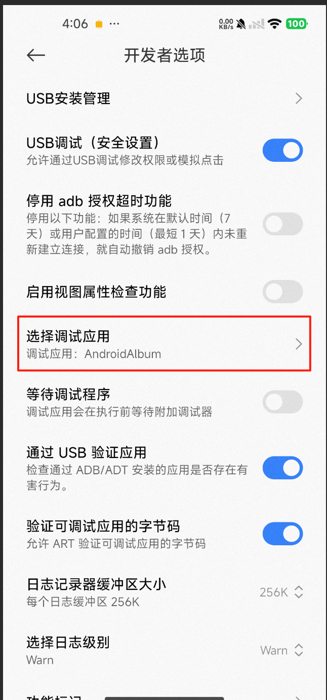
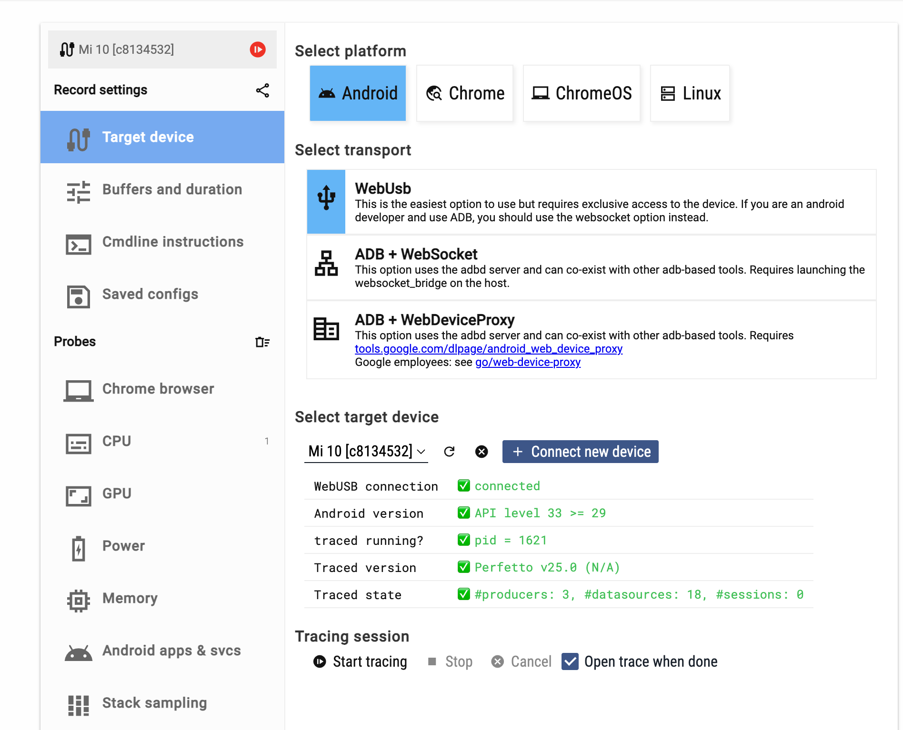
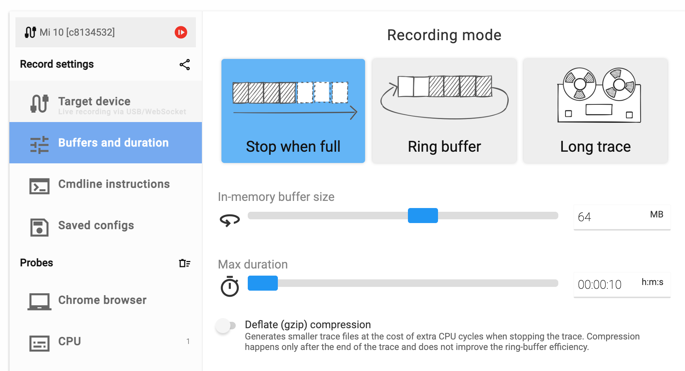
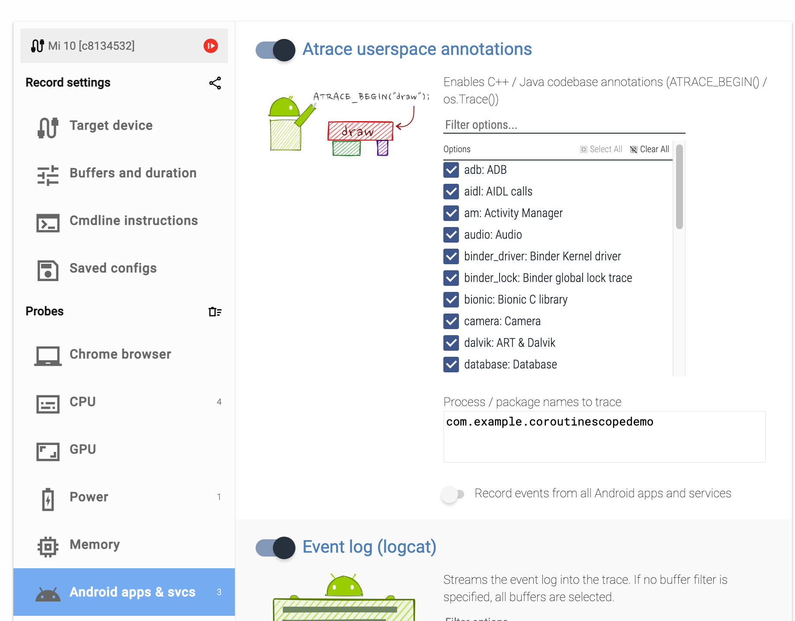
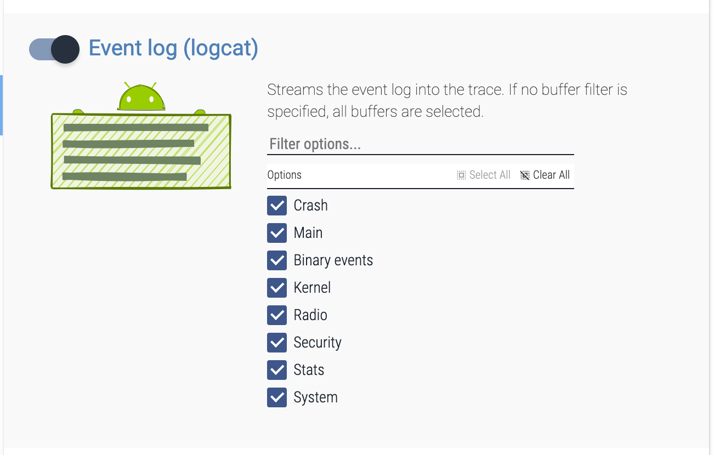
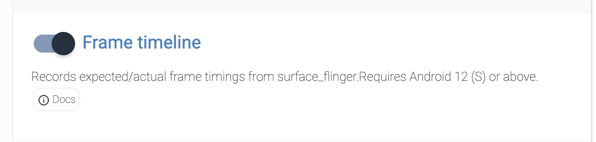

目的
该篇主要介绍如果在Android下面启动perfetto的跟踪，方便后面能快速使用perfetto工具。
启动跟踪服务
启动跟踪服务在Android11(R)之后是默认开启的，在Android9(P)和Android10(Q)上，需要执行以下操作，确保已启用跟踪服务：
|
|
如果是在Android9之前的版本，能通过Perfetto 脚本捕获跟踪记录record_android_trace。
记录跟踪
命令行跟踪
record_android_trace脚本跟踪
- 首先将record_android_trace脚本下载下来：
1 2 3 4//下载脚本 curl -O https://raw.githubusercontent.com/google/perfetto/main/tools/record_android_trace //给脚本分配执行权限 chmod u+x record_android_trace - 开始跟踪
1 2./record_android_trace -o trace_file.perfetto-trace -t 30s -b 64mb \ sched freq idle am wm gfx view binder_driver hal dalvik camera input res memory - 命令解释：
- 上面的脚本中是通过record_android_trace这个脚本收集，接着-o后面跟的是输出的perfetto能识别的文件，-t是跟踪多久的时间，-b后面是最大的文件大小，最后是一堆的category分类。收集完后，它会自动在ui.perfetto.dev上打开该trace文件。上面拼接的分类有如下解释：
- sched：进程调度(Scheduler)
- freq：CPU 频率变化(CPU Frequency)
- idle：CPU 空闲状态(CPU Idle)
- am：应用生命周期、进程调度等(Activity Manager)
- wm：窗口管理、Activity 启动等(Window Manager)
- gfx:图形渲染、SurfaceFlinger、GPU 活动等(Graphics)
- view:视图绘制、布局、测量等(View System)
- binder_driver：进程间通信（Binder IPC）
- hal：硬件抽象层（Hardware Abstraction Layer）
- dalvik：ART 运行时、GC、JNI 调用等（ART Runtime）
- camera：摄像头操作（Camera）
- input：输入事件处理（Input）
- res：资源加载（Resource）
- memory：内存分配和使用（Memory）
- 上面的脚本中是通过record_android_trace这个脚本收集，接着-o后面跟的是输出的perfetto能识别的文件，-t是跟踪多久的时间，-b后面是最大的文件大小，最后是一堆的category分类。收集完后，它会自动在ui.perfetto.dev上打开该trace文件。上面拼接的分类有如下解释：
想获取更多的类别，可以通过如下的指令获取：
|
|
atrace –list_categories 列出的主要是 Atrace 类别。这些类别是 Perfetto 中最常用的类别之一。
一些厂商可能会添加自己的自定义类别，这些也会在这里列出。
使用设备上的 /system/bin/perfetto 命令
首先我得设备是Android13的，所以具备通过adb的命令来抓取跟踪文件，需要在开发者选项中选择调试应用为你要调试的应用。
接着通过如下命令来跟踪：
|
|
此处的命令和上面record_android_trace脚本跟踪基本一致的，跟踪完后，导出该文件到电脑上：
|
|
最后将导出的trace文件拖拽到ui.perfetto.dev中。
通过配置文件来启动跟踪
首先来看下官网给的事例：
|
|
在EOF之前的命令会把配置写到config.pbtx文件中，在EOF之后，和上面的一样，只不过区别是增加了-c后面跟配置文件的路径，该方式也会自动在ui.perfetto.dev上打开该trace。
下面再来解释下上面的配置文件都配置了些什么：
- duration_ms: 10000: 跟踪将持续 10 秒
- buffers: 定义了两个缓冲区。
- size_kb: 8960, fill_policy: DISCARD(主缓冲区，其中填充策略是丢弃模式)
- size_kb: 1280, fill_policy: DISCARD(次缓冲区，用来存储其它少量的数据源)
- data_sources
- linux.ftrace：ftrace和atrace事件的跟踪
- ftrace相关的跟踪
- sched/sched_switch：这是显示 CPU 调度和构建线程 CPU 轨道的最关键事件。 有了这个事件，Perfetto UI 就能知道哪些线程在何时运行在哪个 CPU 上。
- power/suspend_resume：与电源管理相关。
- sched/sched_process_exit, sched/sched_process_free, task/task_newtask, task/task_rename：这些事件有助于 Perfetto 跟踪进程和线程的创建、销毁和重命名，从而在 UI 中正确地显示它们的生命周期和名称。
- ftrace/print: 收集 printk 等内核打印信息，在某些调试场景有用。
- atrace相关的跟踪
- gfx，view，webview：图形和ui渲染相关的atrace。
- camera：摄像头相关的atrace
- dalvik：ART运行时相关的atrace。
- power：电源相关的atrace。
- ftrace相关的跟踪
- linux.process_stats：所有进程的状态跟踪
- target_buffer: 1: 指示此数据源将数据写入第二个（较小的）缓冲区。
- process_stats_config：
- scan_all_processes_on_start: true：这将会在跟踪开始时扫描所有进程信息，确保 Perfetto 了解所有活动的进程和线程的初始状态。 再来看一个之前通过perfetto可视化页面获取的一个配置：
- linux.ftrace：ftrace和atrace事件的跟踪
|
|
主要来说下和上面官网的配置区别。主要在data_sources部分：
- android.packages_list:收集设备上安装的应用程序包的列表。这对于在 Perfetto UI 中将跟踪事件与特定的应用程序关联起来非常有用。
- android.log:收集android logcat日志。这对于调试应用程序行为、查看系统事件、崩溃信息等非常重要。
- android_log_config: 详细配置了要收集的日志缓冲区：
- LID_EVENTS: 事件日志（二进制格式的系统事件）。
- LID_CRASH: 崩溃日志。
- LID_KERNEL: 内核日志。
- LID_DEFAULT: 主日志缓冲区（应用程序和大部分系统日志）。
- LID_RADIO: 无线电/电话相关的日志。
- LID_SECURITY: 安全相关的日志。
- LID_STATS: 统计信息日志。
- LID_SYSTEM: 系统日志。
- 这几乎涵盖了所有主要的 Logcat 日志缓冲区，会收集大量的日志信息。
- android_log_config: 详细配置了要收集的日志缓冲区：
- android.surfaceflinger.frametimeline：收集 SurfaceFlinger 的帧时间线数据。这对于分析 UI 渲染性能、卡顿、Jank 等问题非常关键。它能显示帧的生命周期，从应用提交到最终显示在屏幕上的各个阶段。
- linux.ftrace：和上面对比，增加了atrace_apps信息，这是非常重要的。它会启用针对特定应用程序 com.example.coroutinescopedemo 的应用层自定义 app 类别跟踪。如果该应用使用了 android.os.Trace 或类似的 Tracing SDK 来添加自定义事件，那么这些事件将被捕获。
关于更多的配置可以参考repo上的test/configs
上面是通过record_android_trace脚本，然后配置config.pbtx来跟踪的，我们也可以不借助record_android_trace脚本，直接使用设备上的命令：
|
|
或者先把config.pbtx给推送到设备上，然后再跟踪：
|
|
通过 Perfetto 界面记录跟踪
点开ui.perfetto,dev，然后点击左侧菜单的Record new trace，然后连接上设备：
来到Buffers and duration，这里默认的缓冲区是64M，duration是10s，我们可以选择不动：
接着配置前面说的ftrace和atrace信息，它是在Android apps & svcs的tab中，但是此处我只看到atrace的配置：
可以看到上面我把所有的atrace的分类都给勾上了。在最后一栏中我填上了进程的名字，这个跟上面config.pbtx的atrace_apps配置是一样的，用来跟踪自定义的trace信息。
接着来看下android log的数据源配置，它也是在Android apps & svcs的tab中：
可以看到我这里把所有的log级别都给勾上了。
在Event log下面还有个Frame timeline的跟踪，它是我们卡顿分析中很重要的一项，它会把每一帧的期望时间和实际时间给列出来，方便分析是否是卡顿帧：
它会在config.pbtx中生成如下：
|
|
这个在前面的config中有介绍。所有的配置完事后，可以在Cmdline instructions的tab中浏览生成的配置信息。最终生成的也是前面介绍的config.pbtx: